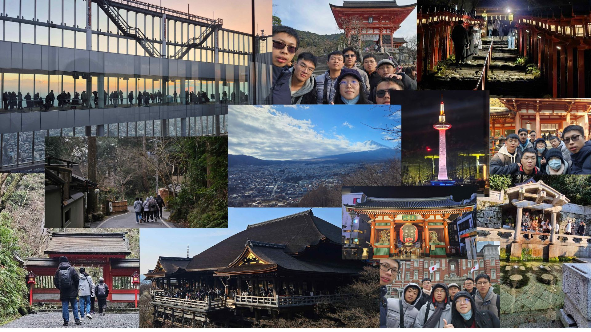
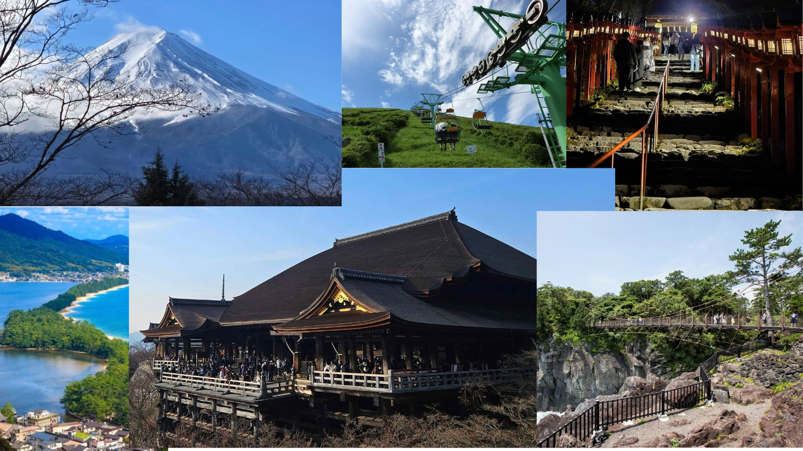

<!-- header.html -->
<style>
  /* Header 相關 CSS */
  .navbar {
    display: flex;
    justify-content: center;
    align-items: center;
    padding: 10px 20px;
    background-color: white;
    border-bottom: 2px solid #eee;
    gap: 20px;
    position: relative;
    z-index: 10;
  }
  
  .logo {
    display: flex;
    align-items: center;
    gap: 10px;
  }
  
  .logo img {
    height: 60px;
  }
  
  .logo-text {
    font-size: 40px;
    font-weight: bold;
    color: #0799fa;
    white-space: nowrap;
  }
  
  .menu {
    flex-grow: 1;
    display: flex;
    justify-content: center;
  }
  
  .menu ul {
    list-style: none;
    display: flex;
    justify-content: center;
    padding: 0;
  }
  
  .menu ul li {
    margin: 0 15px;
  }
  
  .menu ul li a {
    text-decoration: none;
    color: black;
    font-size: 16px;
  }
  
  .icons {
    display: flex;
    align-items: center;
  }
  
  .icons a {
    margin-left: 10px;
    text-decoration: none;
    color: black;
    font-size: 16px;
  }
  
  .icons img {
    height: 20px;
  }
  
  .search-icon,
  .profile-icon {
    font-size: 18px;
  }
  
  /* Popup 相關 */
  .news-item {
    position: relative;
    cursor: pointer;
  }
  
.popup {
  display: none;
  position: fixed; /* 固定在畫面中央 */
  left: 50%;
  top: 50%;
  transform: translate(-50%, -50%); /* 完全置中 */
  background-color: #ffffff;
  padding: 20px;
  border-radius: 8px;
  z-index: 9999;
  text-align: center;
  max-width: 80vw;
  box-shadow: 0 4px 8px rgba(0, 0, 0, 0.2);
}

/* 當滑鼠移到 .news-item 上時，顯示 .popup */
.news-item:hover .popup {
  display: flex;
  flex-direction: column;
  align-items: center;
}


  #unique-image {
    width: 1200px; /* 設定寬度 */
    height: auto; /* 保持比例 */
  }
</style>

<header class="navbar">
  <div class="logo">
    
    <span class="logo-text">翔翔旅遊</span>
  </div>
  
  <nav class="menu">
    <ul>
      <li class="news-item">
        <a href="trytrysee.html">日本地圖</a>
        <div class="popup">
          
          <p>最新的觀光資訊，讓你掌握旅遊動態！</p>
          <a href="trytrysee.html" target="_blank">查看更多</a>
        </div>
      </li>
    </ul>
  </nav>
  
  <nav class="menu">
    <ul>
      <li class="news-item">
        <a href="七天六夜走斷腿行程.html">七天六夜走斷腿行程</a>
        <div class="popup">
          
          <p>持之以恆四個字的偉大在這趟旅行得到了驗證，途中的每分每秒都是一次挑戰，唯有堅持到底，才能發現隱藏在山中、雪中、夜色中那令人忘返的美景</p>
          <a href="七天六夜走斷腿行程.html" target="_blank">查看更多</a>
        </div>
      </li>
    </ul>
  </nav>
  
  <nav class="menu">
    <ul>
      <li class="news-item">
        <a href="關東伊豆深度旅遊.html">深度關東:夢見伊豆X聖地巡禮</a>
        <div class="popup">
          
          <p>持之以恆四個字的偉大在這趟旅行得到了驗證，途中的每分每秒都是一次挑戰，唯有堅持到底，才能發現隱藏在山中、雪中、夜色中那令人忘返的美景</p>
          <a href="關東伊豆深度旅遊.html" target="_blank">查看更多</a>
        </div>
      </li>
    </ul>
  </nav>
  
  <nav class="menu">
    <ul>
      <li class="news-item">
        <a href="橫跨東瀛_夢見伊豆X聖地巡禮.html">橫跨東瀛:夢見伊豆X聖地巡禮</a>
        <div class="popup">
          
          <p>持之以恆四個字的偉大在這趟旅行得到了驗證，途中的每分每秒都是一次挑戰，唯有堅持到底，才能發現隱藏在山中、雪中、夜色中那令人忘返的美景</p>
          <a href="橫跨東瀛_夢見伊豆X聖地巡禮.html" target="_blank">查看更多</a>
        </div>
      </li>
    </ul>
  </nav>
  
  <nav class="menu">
    <ul>
      <li class="news-item">
        <a href="踏入關西_大啖近畿.html">踏入關西X大啖近畿</a>
        <div class="popup">
          
          <p>持之以恆四個字的偉大在這趟旅行得到了驗證，途中的每分每秒都是一次挑戰，唯有堅持到底，才能發現隱藏在山中、雪中、夜色中那令人忘返的美景</p>
          <a href="踏入關西_大啖近畿.html" target="_blank">查看更多</a>
        </div>
      </li>
    </ul>
  </nav>
  
  <nav class="menu">
    <ul>
      <li class="news-item">
        <a href="深度四國_聖地巡禮.html">深度四國X聖地巡禮</a>
        <div class="popup">
          
          <p>持之以恆四個字的偉大在這趟旅行得到了驗證，途中的每分每秒都是一次挑戰，唯有堅持到底，才能發現隱藏在山中、雪中、夜色中那令人忘返的美景</p>
          <a href="深度四國_聖地巡禮.html" target="_blank">查看更多</a>
        </div>
      </li>
    </ul>
  </nav>
  
  <div class="icons">
    <a href="https://youtube.com/shorts/SQdDumn-6dY?feature=share">
      
    </a>
    <a href="#">
      
    </a>
    <a href="#" class="search-icon">🔍</a>
    <a href="#" class="profile-icon">👤</a>
  </div>
</header>
